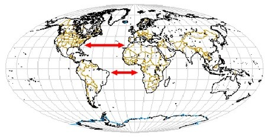
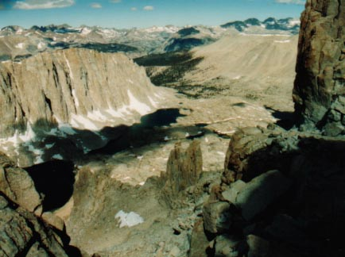

| Feature Article - December 2000 |
| by Do-While Jones |

We are talking this month about Plate Tectonics (which is the modern form of the Continental Drift theory) for three reasons. One is that Plate Tectonics is related to the idea that "the present is the key to the past." The second is that it has a bearing on some estimates of the age of the Earth and geologic time periods. The third reason is that a fifth and sixth grade science teacher asked us to. (Although, in all honesty, the article was already in the editorial pipeline months before we received his e-mail.)Plate Tectonics is an old creationist theory that was originally rejected by secular geologists. Recently it has been hi-jacked by evolutionists, and is now part of their mantra. According to the theory, the continents were once joined together, but have moved apart. That's why the North and South American coastlines look like they fit with Europe and Africa.
There is a wonderful on-line geology textbook called Planet Earth and the New Geosciences 1. It is a typical secular geology textbook. That means it contains heavy doses of evolution, environmentalism, and New Age religion. (For example, units 3 and 4 refer to the Earth as a "Living Machine," which is about as New Age as you can get.) Although we certainly don't agree with the interpretations of the facts in the book, we recommend it because the facts are basically correct, and it accurately represents the indoctrination that typically masquerades as science. It says,
| In 1915, Alfred Wegener published a book entitled The Origin of Continents and Oceans that shocked the scientific world. In it, he advanced the startling hypothesis that the continents of the world were actually moving and that at one time the Atlantic Ocean did not exist. 2 |
They describe the theory, using an illustration that involves broken egg shells moving on a hard-boiled egg.
| ||||
|---|---|---|---|---|
Their facts are basically correct. The surface of the Earth is made up of broken plates which have moved great distances. The edges of the plates are very well marked by geologic activity (earthquakes and volcanoes).
Furthermore, the plates are actually moving today. They move about 1 inch per year (some places as much as 2.5 inches per year). Once upon a time that would have been difficult to measure, but not any more. The Global Positioning System (GPS) can pinpoint locations to millimeter accuracy, if the receiver is allowed to remain in one place long enough. (For more information on how the GPS system works, we direct you to my two articles 4 published in a popular electronics/software magazine.)
Regardless of whether or not one believes the Bible is inspired, one must admit that Genesis is an ancient historical document translated into Greek in 331 B.C. This ancient document advances the theory that at one time all the water was gathered in one place, leaving all the land together in one super-continent (Genesis 1:9), and that the land was subsequently broken apart (Genesis 10:25). So, there were people who believed in plate tectonics for more than 22 centuries before Wegener wrote his book.
Not only that, there is another book that beat Wegener to the punch by 57 years.
| In 1858 Antonio Snider-Pellegrini, a devout American Christian, published in Paris his book, La Création et ses mystères dévoilés (Creation and its mysteries unveiled) in which he anticipated Wegener's Pangaea. 5 |
Plate Tectonics is not a "new" idea. Furthermore, we think it is unforgivable that in the academic world, where so much importance is usually placed on who had the idea first, Wegener is given credit for an idea that was so well established so long before he was born. Antonio Snider-Pellegrini's work might have been obscure, but how can one argue that Genesis was an obscure document that few people had ever read before 1915?
Come to think of it, there are really only two differences. The explanation of how it happened is basically the same for both theories. In the creationist theory, the land was divided by some mysterious forces that nobody can adequately explain scientifically. In the Plate Tectonic theory, the plates are moved by some mysterious forces that nobody can adequately explain scientifically. According to one college geology textbook,
| Some geologists believe that plate-tectonic movements can be explained by convection in the upper mantle. ... Other geologists believe that convection occurs in the entire mantle. ... Thus convection in the mantle is indeed possible and prompts geologists to debate some key questions: Is convection an important process by which heat is transferred in the Earth? Is convection occurring now? Has it occurred any time in the past? 6 |
|
Here we see two continents in the act of colliding. India, in its long northward trek from its original home near Madagascar, has rammed into the underbelly of Asia, and the result is the highest mountain range on Earth. Much the same is happening in the Alps, where the northern motion of Africa is forcing Italy against the European continent.
As though they were two automobiles in a collision, the continents display the equivalent of crumpled fenders and twisted frames in the tortured and distorted strata of rock found in these mountain-building collision zones. 7 |
The error in this reasoning, of course, is the idea that "the present is the key to the past." You can't judge how fast the wheels were turning just before the car hit the tree by measuring how fast they are turning now. But uniformitarian geologists believe that the rate of geologic processes remain generally constant over time (whenever it suits their purposes). Therefore they conclude that the speed at which the plates are moving today has been the same for millions of years. They think that mountains were created by very slow collisions over millions of years, just like our fictitious police officer thought the car struck the tree at 0.4 miles per hour for 5 seconds.
|
On August 13, 2000, I made my fourth successful hike all the way to the top of Mt. Whitney. (Let's not talk about the numerous unsuccessful ones.) I left the Whitney Portals parking lot at 4:48:35 AM (8,261 feet above sea level). After hiking more than 11 miles to the summit, I finally reached the top (14,494 feet) at 1:22:07 PM. After a 23-minute rest at the top, I headed down and got back to the car at 7:58:59 PM.
I tell you this to let you know that I have recently been "up-close and personal" with a very tall mountain for more than 15 hours. Here is what I saw looking northwest from Trail Crest (36o 33' 34" North, 118o 17' 30" West, 13,615 feet). Some of those slopes are almost vertical for thousands of feet. Were they really produced by a 2 inch per year collision with the Pacific Plate moved by convection? We don't think so. |
 |
What we see here is evidence of a high-speed collision. The North American Plate hit the Pacific Plate very fast and very hard.
The abstracts of two articles in Science use lots of impressive phrases. They talk about a "vertically averaged deviatoric stress tensor field", "gravitational potential energy differences", "fault-normal compression", "plate interaction stresses", and "internal deformation". What they are saying is that the western United States has really been crunched together, and is slowly moving in such a way as to relieve some of the stress.
We believe that the slow motion of plates and landmarks we observe today, and the earthquakes we experience, are simply a residual effect of the tremendous force that ripped continents apart, and smashed them together to form mountains. The collision was fast enough to build Mount Whitney almost instantly, and produced stresses and gravitational imbalances that are still being relieved today. The small movements we measure today did not form the mountains over millions of years.
As it says on the cereal box, "Some settling will occur." That's all that's happening today.
| Quick links to | |
|---|---|
| Science Against Evolution Home Page |
Back issues of Disclosure (our newsletter) |
| Web Site of the Month |
Topical Index |
Footnotes:
1
Planet Earth and the New Geosciences
https://adilmakmurpersada.com/pdf/planet-earth-and-the-new-geoscience
(Ev)
2
Planet Earth and the New Geosciences, Unit 3
https://adilmakmurpersada.com/pdf/planet-earth-and-the-new-geoscience
3
ibid.
4
Do-While Jones, Circuit Cellar INK, December 1996, "The Global Positioning System, Part 1: Guiding Stars" and January 1997, "The Global Positioning System, Part 2: Implementation Problems and Solutions"
5
S. Warren Carey, Theories of the Earth and Universe (1998) Stanford University Press, page 90
(Ev-)
6
Press & Siever, Understanding Earth, 1994, W. H. Freeman and Co. page 439
(Ev)
7
Planet Earth and the New Geosciences, Unit 3
https://adilmakmurpersada.com/pdf/planet-earth-and-the-new-geoscience
8
Flesch et al., Science Vol 287 4 February 2000, "Dynamics of the Pacific-North American Plate Boundary in the Western United States", https://www.science.org/doi/10.1126/science.287.5454.834
(Ev)
9
Thatcher et al., Science Vol 283 12 March 2000, "Present-Day Deformation Across the Basin and Range Province, Western United States", https://www.science.org/doi/10.1126/science.283.5408.1714
(Ev)